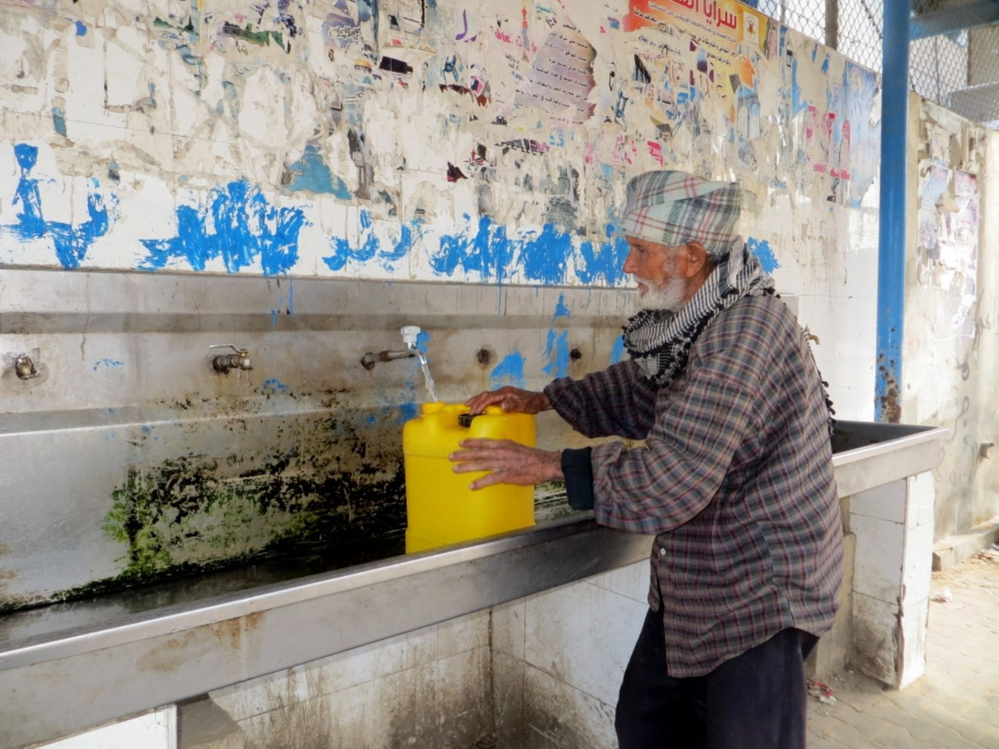
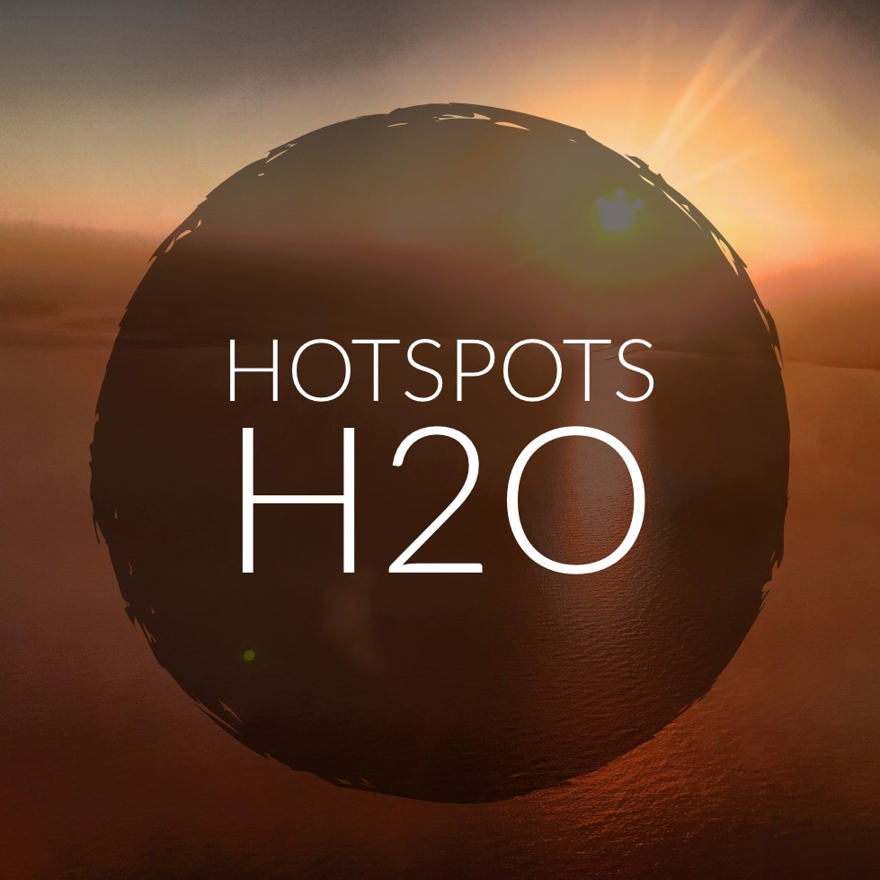
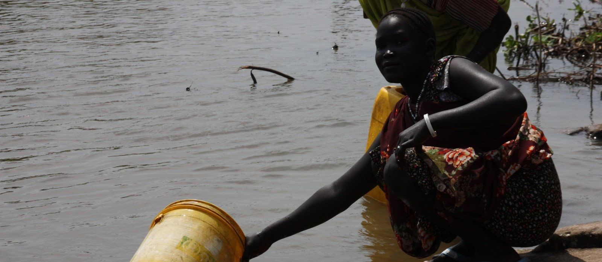
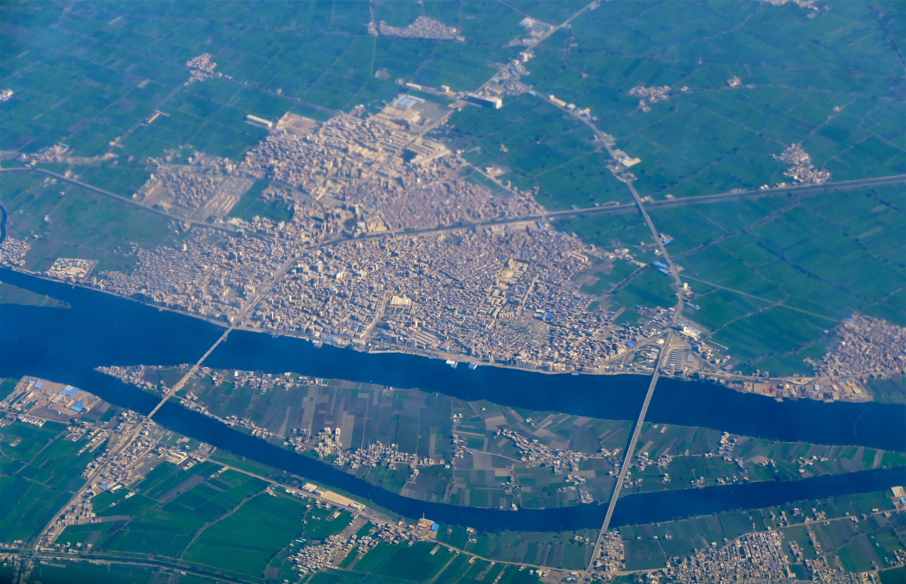
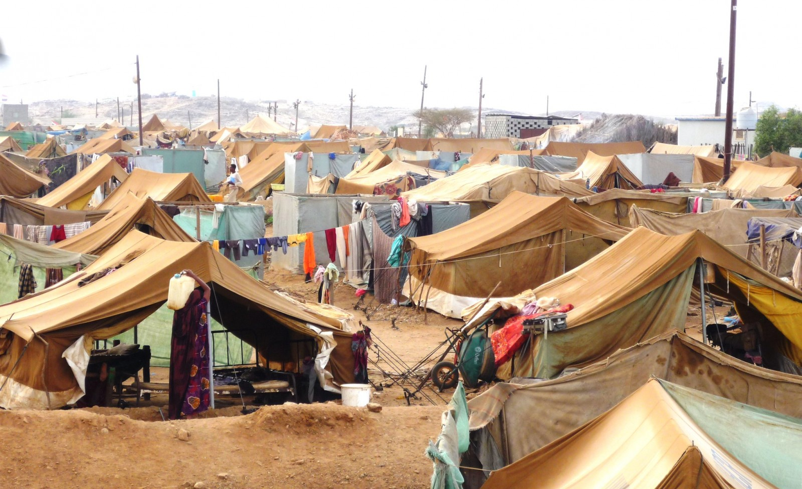
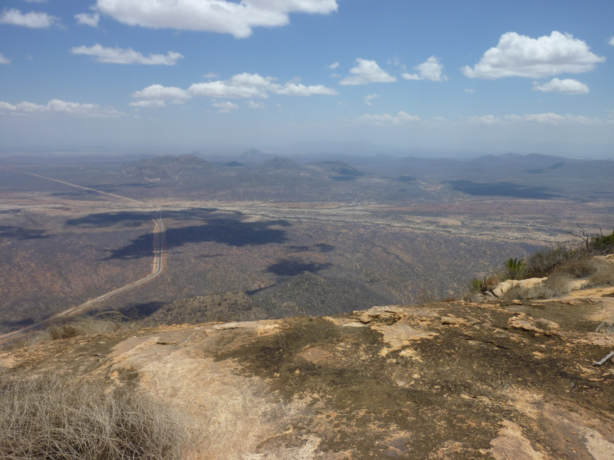
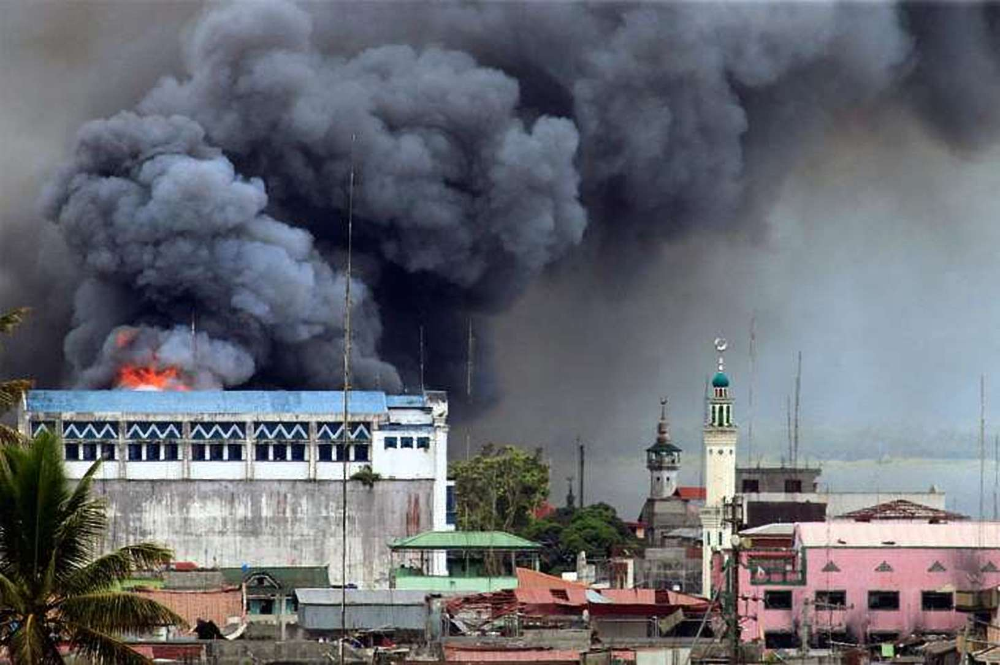

HotSpots H2O, July 11: Conflict Over Electricity Threatens Gaza Water Supply
Residents of the Gaza Strip run low on clean water as the region’s electricity crisis continues.Foreign aid rushes in to provide food, water, and other amenities to people displaced by the conflict in Marawi City, Philippines.The Iraqi government has liberated Mosul from IS, but the city is now faced with rebuilding water, electricity, and other key infrastructure.Violence between Boko Haram and the Nigerian army continues to force people from their homes in northern Nigeria.Fighting between IS and US-led forces in Raqa, Syria has damaged the city’s water pipelines.
'By the time we left, we had suffered a lot; we were very scared.It took us two days to get here by foot, after we slept overnight in the bush.Some of the people we travelled with passed away on the journey.Some of our children died of thirst as we didn’t have any water.'–-Falmata, a 35-year-old Nigerian woman, who was forced to resettle after Boko Haram drove her family out of her village.Escalating violence between Boko Haram and the Nigerian army is pushing many people from their homes and leaving them to wander the countryside in search of food, water, and shelter.
Medecins Sans Frontieres
2 Number of hours per day that some households in the Gaza Strip have electricity.The electricity cuts are causing numerous problems for the people of Gaza, including limiting their access to clean drinking water.The electricity shortage began in April after Gaza’s only power station ran out of fuel, and subsequent disagreements between Hamas, the Palestinian Authority, and Israel have prevented the power station from running again at full capacity.
Times of Israel
27 Number of people in Raqa, Syria who have been killed in the past few weeks while trying to collect water from the Euphrates River or nearby wells.Recent airstrikes have destroyed much of Raqa’s water infrastructure, forcing residents to travel risky distances to fetch water.Temperatures in the city are climbing as high as 46 Celsius (114 Fahrenheit), making the water shortage even more dismal.
Inquirer
The Iraqi army has recaptured Mosul from IS, but many of Mosul’s displaced people have nothing to return to, according to a report by UNHCR.The city must begin rebuilding a great deal of infrastructure, including water lines, power stations, schools, hospitals, and homes.The process will most likely be 'slow and costly.'
Relief Web
As fighting in Marawi City continues, many countries are sending aid to assist the thousands displaced by the conflict.The EU, South Korea, India, and others have pledged large sums to help meet IDP needs for food, water, shelter, and other amenities.
Philippine Star
Posted On: 2017-07-11T00:00:00
Posted By: Kayla Ritter







Content Date: 2017-07-11
Download Date: 2021-05-12
Document ID: L0C04BMXA